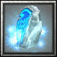

被稱為"鬼道雪"的豐州猛將立花道雪之女。由於父親膝下沒有男子，他自小就繼承了家督 地位，成為立花城城主。擁有很高的自尊心，以及不容妥協的性格。 敏捷型近戰英雄
法術 ：Ｂ 輔助 ：Ｓ 最擅長輔助隊友進攻，降低大範圍敵人裝甲 敏捷：28+2.70（主要） 智慧：28+2.00 Ｗ[主動] 冰霜斬擊 攻擊時附加每秒[5/10/15/20]點的冰凍傷害，目標會受到冰霜影響而減慢攻擊速度[10/15/20/25]%及移動速度[15/25/35/45]%，持續1秒。 消耗法力[8/10/12/14] 
Ｅ[主動] 白熱 增加指定部隊攻擊速度[50/100/150/200]%。持續15秒。 消耗法力[80/100/120/140]，等待時間15秒 會被魔法免疫解除效果  Ｒ[主動] 冰靈舞魂 瞬間移動至指定[550/600/650/700]距離的地點， 並產生一陣冰暴對附近300範圍敵人造成[100/200/300/400]傷害並緩慢30%攻擊及移動速度，持續[6/6/7/7]秒。 消耗法力[100/120/140/160]，等待時間16秒  Ｔ[主動] 破甲術 以強大的電擊破壞[650/700/750]範圍內的敵人的盔甲，強制降低他們[32/44/56]點防禦。持續[25/30/35]秒。 消耗法力[200/250/300]，等待時間120秒 破甲無視魔法免疫，但受影響後才進入魔法免疫狀態可解除。 |